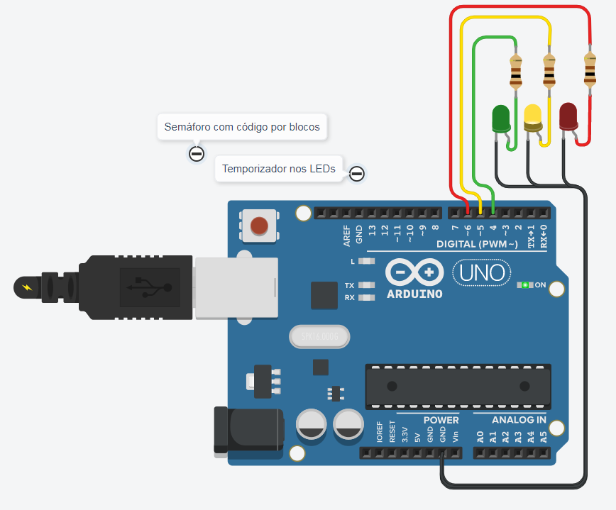

Construa o seu próprio semáforo utilizando Arduino
Neste tutorial, vamos aprender a criar um semáforo em Arduino utilizando LEDs nas cores vermelho, amarelo e verde. Além disso, cada LED será conectado a um resistor de 220 ohms para garantir o correto funcionamento do circuito. Vamos fornecer um código para ligar os LEDs de forma sequencial, criando assim um semáforo funcional!
Materiais necessários: 01 Arduino Uno R3; 01 LED vermelho; 01 LED amarelo; 01 LED verde; Resistores de 220 ohms (3 unidades); 01 Protoboard; Jumpers
Passo 1: Conexão dos LEDs e Resistores
Para começar, conecte o LED vermelho na porta 6 do Arduino, o LED amarelo na porta 5 e o LED verde na porta 4. Certifique-se de conectar o terminal positivo (anodo) de cada LED ao pino correspondente do Arduino e o terminal negativo (catodo) ao resistor de 220 ohms. Em seguida, ligue o outro terminal do resistor ao GND do Arduino. Repita esse processo para os três LEDs.
Passo 2: Código do Semáforo
// Definindo os pinos dos LEDs
int vermelhoPin = 6;
int amareloPin = 5;
int verdePin = 4;
void setup() {
// Inicialização dos pinos como saída
pinMode(vermelhoPin, OUTPUT);
pinMode(amareloPin, OUTPUT);
pinMode(verdePin, OUTPUT);
}
void loop() {
// Vermelho aceso, os demais apagados (estado inicial)
digitalWrite(vermelhoPin, HIGH);
digitalWrite(amareloPin, LOW);
digitalWrite(verdePin, LOW);
delay(2000); // Aguarda 2 segundos
// Vermelho apagado, amarelo aceso, os demais apagados
digitalWrite(vermelhoPin, LOW);
digitalWrite(amareloPin, HIGH);
digitalWrite(verdePin, LOW);
delay(1000); // Aguarda 1 segundo
// Amarelo apagado, verde aceso, os demais apagados
digitalWrite(vermelhoPin, LOW);
digitalWrite(amareloPin, LOW);
digitalWrite(verdePin, HIGH);
delay(2000); // Aguarda 2 segundos
}
Passo 3: Upload do Código
Com o código acima pronto, conecte o Arduino ao computador utilizando um cabo USB e faça o upload do programa para a placa.
Passo 4: Testando o Semáforo
Agora que o código foi carregado com sucesso no Arduino, você deve observar o funcionamento do semáforo em sequência: vermelho, amarelo e verde, com os respectivos tempos de aceso configurados no código.
Parabéns! Você criou um semáforo funcional utilizando Arduino!